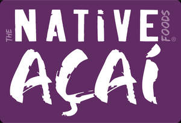

Trade Mark Journal No.2025/015 11 April 2025
UK00004178192 24 March 2025 (30,32,35)

Registration of this mark shall give no exclusive rights to the word "Foods".
- Class 30
- Pastry products; chocolate; creamy ice creams; sorbets [ice creams]; sorbet mixes [ice creams]; sugar, honey, molasses syrup; royal jelly; yeast; frozen confectionery; flour confectionery; prepared desserts [confectionery]; confectionery (not medicinal).
- Class 32
- Fruit juice-based drinks; juices; concentrated fruit juices; organic fruit juices; fruit-based drinks; excluding specifically green tea drinks.
- Class 35
- Franchise management advisory services; Advertising services for businesses related to franchises; Franchise services to provide assistance to businesses; Assistance services related to establishing franchises; Business assistance, management, and administration services; Promotional, marketing, and advertising services; Retail services of frozen vegetables; Wholesale services of frozen vegetables; Online retail services of frozen vegetables; Retail services of canned vegetables; Wholesale services of canned vegetables; Online retail services of canned vegetables; Retail services of dried vegetables, vegetables, and legumes; Wholesale services of dried vegetables, vegetables, and legumes; Online retail services of dried vegetables, vegetables, and legumes; Retail services of cooked vegetables, vegetables, and legumes; Wholesale services of cooked vegetables, vegetables, and legumes; Online retail services of cooked vegetables, vegetables, and legumes; Retail services of canned fruits; Wholesale services of canned fruits; Online retail services of canned fruits; Retail services of dried fruit; Wholesale services of dried fruit; Online retail services of dried fruit; Retail services of frozen fruits; Wholesale services of frozen fruits; Online retail services of frozen fruits; Retail services of cooked fruits; Wholesale services of cooked fruits; Online retail services of cooked fruits; Retail services of edible jellies; Wholesale services of edible jellies; Online retail services of edible jellies; Retail services of jams; Wholesale services of jams; Online retail services of jams; Retail services of milk; Wholesale services of milk; Online retail services of milk; Retail services of dairy products; Wholesale services of dairy products; Online retail services of dairy products; Retail services of compotes; Wholesale services of compotes; Online retail services of compotes; Retail services of butter; Wholesale services of butter; Online retail services of butter; Retail services of cheeses; Wholesale services of cheeses; Online retail services of cheeses; Retail services of yogurts; Wholesale services of yogurts; Online retail services of yogurts; Retail services of pickled vegetables; Wholesale services of pickled vegetables; Online retail services of pickled vegetables; Retail services of prepared vegetables; Wholesale services of prepared vegetables; Online retail services of prepared vegetables; Retail services of cut vegetables and vegetables; Wholesale services of cut vegetables and vegetables; Online retail services of cut vegetables and vegetables; Retail services of bakery products; Wholesale services of bakery products; Online retail services of bakery products; Retail services of chocolate; Wholesale services of chocolate; Online retail services of chocolate; Retail services of creamy ice creams; Wholesale services of creamy ice creams; Online retail services of creamy ice creams; Retail services of sorbets [ice creams]; Wholesale services of sorbets [ice creams]; Online retail services of sorbets [ice creams]; Retail services of sorbet mixes [ice creams]; Wholesale services of sorbet mixes [ice creams]; Online retail services of sorbet mixes [ice creams]; Retail services of sugar, honey, molasses syrup; Wholesale services of sugar, honey, molasses syrup; Online retail services of sugar, honey, molasses syrup; Retail services of yeast; Wholesale services of yeast; Online retail services of yeast; Retail services of frozen confectionery; Wholesale services of frozen confectionery; Online retail services of frozen confectionery; Retail services of flour confectionery; Wholesale services of flour confectionery; Online retail services of flour confectionery; Retail services of prepared desserts [confectionery]; Wholesale services of prepared desserts [confectionery]; Online retail services of prepared desserts [confectionery]; Retail services of confectionery (not medicinal); Wholesale services of confectionery (not medicinal); Online retail services of confectionery (not medicinal); Retail services of raw and unprocessed seeds; Wholesale services of raw and unprocessed seeds; Online retail services of raw and unprocessed seeds; Retail services of raw and unprocessed grain; Wholesale services of raw and unprocessed grain; Online retail services of raw and unprocessed grain; Retail services of fresh legumes; Wholesale services of fresh legumes; Online retail services of fresh legumes; Retail services of fresh aromatic herbs; Wholesale services of fresh aromatic herbs; Online retail services of fresh aromatic herbs; Retail services of fresh fruits; Wholesale services of fresh fruits; Online retail services of fresh fruits; Retail services of unprocessed vegetables; Wholesale services of unprocessed vegetables; Online retail services of unprocessed vegetables; Retail services of fresh root vegetables; Wholesale services of fresh root vegetables; Online retail services of fresh root vegetables; Retail services of fresh vegetables, vegetables, and legumes; Wholesale services of fresh vegetables, vegetables, and legumes; Online retail services of fresh vegetables, vegetables, and legumes; Retail services of raw agricultural products; Wholesale services of raw agricultural products; Online retail services of raw agricultural products; Retail services of raw and unprocessed aquatic products; Wholesale services of raw and unprocessed aquatic products; Online retail services of raw and unprocessed aquatic products; Retail services of raw horticultural products; Wholesale services of raw horticultural products; Online retail services of raw horticultural products; Retail services of agricultural and hydroponic crops, horticultural and forestry products; Wholesale services of agricultural and hydroponic crops, horticultural and forestry products; Online retail services of agricultural and hydroponic crops, horticultural and forestry products; Business management; Franchise services of fruits; Franchise services of vegetables; Franchise services of vegetables; Franchise services of canned legumes; Franchise services of frozen legumes; Franchise services of dried legumes; Franchise services of cooked legumes; Franchise services of jellies; Franchise services of jams; Franchise services of compotes; Franchise services of milk; Franchise services of cheeses; Franchise services of butter; Franchise services of yogurt; Franchise services of dairy products; Franchise services of bakery products; Franchise services of confectionery products; Franchise services of chocolate; Franchise services of creamy ice creams; Franchise services of sorbets; Franchise services of sugar; Franchise services of honey; Franchise services of molasses syrup; Franchise services of yeast; Franchise services of raw and unprocessed agricultural, aquacultural, horticultural, and forestry products; Franchise services of raw and unprocessed grains and seeds; Franchise services of vegetables; Franchise services of fresh legumes.
TheNativeFoodsCo, Lda
Representative: Marks & Us Lawyers Marcas y Patentes